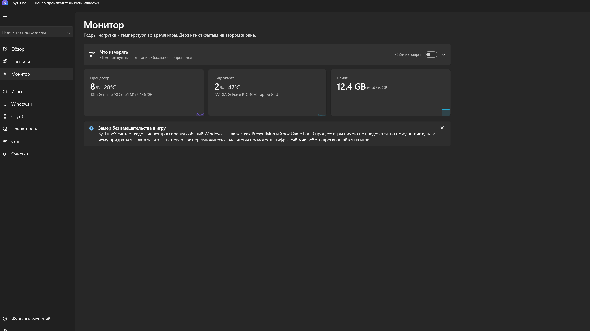

Exact rollback, not a guessed default
Before writing anything, SysTuneX records the value your machine actually had. Undo puts that back — not a number someone assumed Windows ships with. Settings you changed yourself are never touched.
A free, open-source gaming optimizer and FPS monitor for Windows 10 and 11. Every change is written down before it is made — so all of it comes back, exactly.

Why this one
This one shows its work. Three decisions shape everything else in it.
Before writing anything, SysTuneX records the value your machine actually had. Undo puts that back — not a number someone assumed Windows ships with. Settings you changed yourself are never touched.
The frame counter reads Event Tracing for Windows — the same source PresentMon and the Xbox Game Bar use. No hooks, no driver, nothing an anti-cheat could mistake for a cheat.
Record the machine before a change and after it, then compare. No claimed FPS numbers, because no honest tool can promise one — your hardware and your game decide.
What's inside
Tuning, monitoring, services, privacy, network and cleanup — each one showing what it touches and what it costs.
Game Bar and Game DVR, fullscreen optimizations, mouse acceleration, CPU scheduling, timer resolution, PCIe link power saving and the accessibility key shortcuts that open a dialogue mid-match.
VBS, HVCI, the hypervisor, Recall, Copilot, widgets and search features — each one build-aware, so a tweak that does not apply to your build is hidden rather than offered and ignored.
One switch stops background services, raises the power scheme and frees memory — and puts all of it back when you switch it off. No reboot, nothing left in the registry.
Game mode can follow the game or the clock. Neither one undoes what you switched on by hand — a schedule only ends the session the schedule started.
Shader caches, update leftovers, crash dumps, thumbnails and temp files — measured first, listed by size, and the one action the app warns you it cannot undo.
Telemetry and its scheduled tasks, the advertising ID, activity history, suggestions, location and clipboard sync. Update, activation, Store and Defender endpoints are deliberately left alone.
Compact readout
One keypress puts a small always-on-top window on screen with the same readings as the monitor page. It is an ordinary window with its chrome removed — not an overlay — so it appears over borderless windowed games without touching the game process.
The honest limit: it will not appear over a game in exclusive fullscreen, which owns the display outright. That is the price of never touching the game.
Tabular figures, so a counter going 99 → 100 never shifts the layout.
Trust and safety
That deserves a check, and there is a real one. Every release publishes the SHA-256 of the file next to it — and the same number is printed in the public GitHub Actions log of the run that built it, which nobody can edit afterwards.
If all three agree, this is the file GitHub's runner built from the tagged source. That is a stronger guarantee than a code signature, which proves only who shipped a file and nothing about what it does.
SmartScreen will warn. The executable is not code-signed — a certificate costs several hundred dollars a year and requires a registered company. The warning counts how many people have run the file, not what it does.
Questions
The frame counter reads Event Tracing for Windows, the same source PresentMon and the Xbox Game Bar use. Nothing is injected into the game process and no driver is loaded, so there is no hook for an anti-cheat to object to. The trade is that there is no in-game overlay over exclusive fullscreen — you alt-tab to read the numbers, and the counter stays pointed at the game.
Yes. Every supported change is recorded before it is made, with the value your machine actually had, and can be reverted individually or all at once from the change log. Cleanup is the one exception — deleted files cannot be brought back, and the app says so before deleting anything.
The executable is not code-signed, because a certificate costs several hundred dollars a year and requires a registered company. Instead every release publishes a SHA-256 checksum you can match against the public build log, which proves the file came from the tagged source. Choose More info → Run anyway, or check the hash first, or put the file through VirusTotal.
No — it is a self-contained single file. It does need administrator rights, because the registry keys it writes live under HKEY_LOCAL_MACHINE, changing a service's start type goes through the service control manager, and the frame counter opens an Event Tracing session. All three refuse a standard token.
No honest tool can promise a number — it depends on your hardware, your game and what is already running. SysTuneX is built so you can measure it yourself: record the machine before and after, and run the same benchmark on both sides. A tool that quotes you a percentage is guessing.
Free and open source under the MIT licence. No paid tier, no account, no advertising, and no telemetry of any kind — the source is on GitHub if you would rather check that than believe it.
English, Russian and Ukrainian — the whole interface, including every tweak, service and profile with its full description. Picked from the language menu in Settings; no restart needed.
Single file, no installer, nothing written until you choose it — and everything written is written down.